Love the Battle-Pathways to Performing¶
Love the Battle: Pathways to Performing
Under Pressure
Jim Loehr
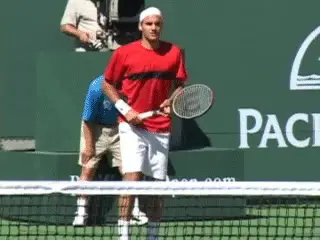
Great competitors love the process, not just the winning.
It's easy to love winning. Great competitors learn to love the process. They learn to extend themselves and to find great fulfillment in the feeling that they gave their best, put themselves on the line, and moved closer to the control that they are seeking within themselves.
This mastery of myself, this battle of me against myself, these are not just competitive skills in sport. These are life skills.
Pete Sampras says in his recent autobiography that he had a mantra coming up as a young player: "It's all a learning experience." His focus was never on results. He was never ranked at the top nationally in the juniors. Yet he went on to win the most Grand Slam titles in history. Why?
"It was always about playing the right way, trying to develop a game that would hold up throughout my career."
"It wasn't about winning. [By putting pressure on myself to develop a great game, I had less preessure to win. That helped me enjoy the game and develop my maximum] [potential."]
These two articles on Tennisplayer have been prepared to help you, no matter what your level, achieve your fullest potential as well, the same as Pete Sampras and all the other great champions in our sport. They contain what I believe are the most important understandings and technologies from my nearly 20 years of work with high-level performers.
Emotion Runs the Show
Perhaps the most important statement I could make about competition is that emotion runs the show. For a long time in my career, I thought the key to actualizing talent and skill in the context of pressure was mental, that something that we would think or visualize would have an impact on whether or not we could come to terms with the fullest measure of our talent and skill. And that was true. I fully understood how important the mental was, but I wasn't sure exactly how it all connected.
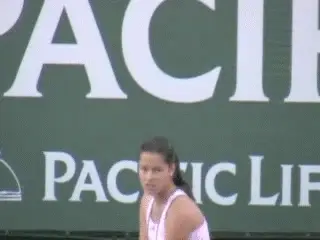
Emotions, positive and negative, are what run the show.
As my career evolved, I began to realize that the real center stage phenomenon was really not mental, but it was emotional. The reason that the mental is important, the reason that we become very disciplined in how we're thinking, in our rituals, in how we're visualizing is the impact on emotion.
The more I began to study the evolution of this emotional concept, the more I began to realize that what we really have to do as athletes is to mobilize emotion. We have to mobilize the emotions which empower us, which bring to life our talent and skill. Whatever we can do to make that happen, be it physical or be it mental, we must do that.
We know, for instance, that how we're feeling emotionally affects our thinking. It affects the images we carry in our head. We also know that the way in which we think and what we are visualizing and the images we're carrying at any particular time affect what we're experiencing emotionally.
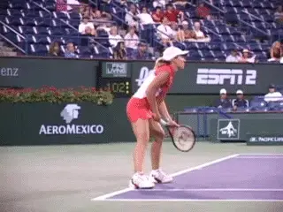
What we do physically is critical to how we feel.
It works both ways. We know, for instance, that if you become fatigued, if you're not physically fit enough, if you are literally running out of gas physically, your muscles run out of glycogen. Suddenly you can't fight the battle anymore.
When you become fatigued, you are forced into emotional submission. The emotions that empower you are gone. When you don't properly sleep, when you don't intake food and water properly, the effects are dramatic in terms of your motivation, your sense of passion, your sense of eagerness. So we should look at this as a continuum. There are a wide diversity of things, some mental, some physical, that affect emotion.
There is a reason that emotions are so important in the context of competition. This is because emotions reflect what is happening at a very deep physiological basis within the person.
A very important concept in my development of the notion of peak performance and the concept of being the very best that you can be was the idea of the ideal performance state. (link.) Perhaps the single most important understanding that I came to in the early part of my career was that the same feelings and emotions are present when athletes perform at their best, be it baseball, basketball, football, tennis, whatever.
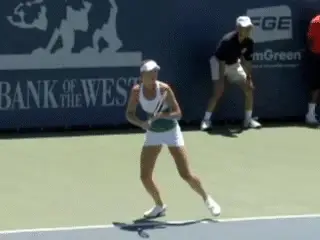
Our best tennis occurs within a specific feeling climate.
When we access our talent and skill it invariably occurs within a very specific, very unique feeling climate. These feelings and emotions reflect a very delicate balance of physiological harmony, wherein talent and potential become fulfilled. And therein lies the understanding of the critical role emotion plays.
Feelings and emotions are simply body talk. They represent the internal eyes and ears of the body. Feelings and emotions are analogous to the instrument gauges on a high-performance race car. They reflect what's going on at a much deeper level.
And the body is always talking. Feelings and emotions are always surfacing in one form or another, and deeply felt emotions have a real physiological, biochemical basis. Fear, anger, joy, challenge, disgust have their own unique physiological and biochemical profile.
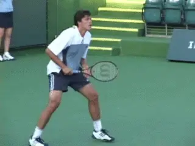
Feelings are the body talking and the body is always talking.
The most exciting information that's occurring today in the context of unlocking this mystery between the mind and the body is in the context of emotions. Emotions are really the result of millions of tiny messenger molecules that are stimulating receptors on the surface of all the cells in our body, whether it be neurons, nerve cells, or muscle cells, and even immune cells.
Every cell in our body contains millions of receptors, like satellite dishes pointed outward ready to receive critical information that is necessary, that is really communicated via these feelings and emotions. A messenger molecule, for instance, that's released in the brain that's associated with positive emotion and joy is called endorphin. And we know that over 200 varieties of that single chemical by itself is found in nearly every system of the body, including the immune system and the endocrine system--200 varieties!
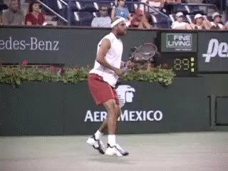
Emotions affect how we perceive what is happening.
But the most important thing is that emotions have a real connection to the physiology of the body. And there is a peak emotional state that empowers the body, that bring to life one's talent and skill. If we can summon those emotions, if we can summon those feelings in the context of competition, that's when we achieve greatness.
Emotion affects the way we perceive an event. The way we are feeling right now powerfully influences the way we see things. And vice versa.
We also know that the way you think about an event, a bad line call, the way you think about an opponent, the way you think about winning and losing, is going to affect the kind of emotional climate, the feelings that surface. The chemistry that lies behind those feelings is being activated in a very specific way precisely because you're thinking about something in a specific way.
We've got to become very disciplined and really understand how important it is to think and to visualize with great discipline when it comes to competition, because we really are moving our chemistry when we do so.
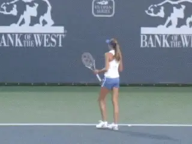
Discipline--for example, serving and return rituals--are key to controlling your chemistry during competition.
I want to spend a little bit of time talking about the emotional state that empowers us, this ideal of performance state, because this is really the basis of becoming a super-achiever at anything in life, be it in sport, in business, being able to take exams in school. If you can create this wonderful state of physiological harmony that we access and summon through mobilizing specific emotions and feelings within ourselves, we have control. That's what makes a peak performer.
Now, what are those feelings? First of all you feel very relaxed in your muscles. And that reflects a physiological state of arousal. You're very loose. There's a profound sense of calmness. Even though you're in the center of a hurricane, things are going wild, things are crazy, all kinds of stuff happening, there's a real sense of calmness that you're able to handle what's happening. It's almost like time slows down.
This, we know, is related to a particular frequency of brain oscillation called EEG, electroencephalographic activity. And when you get the right arousal sequence going and the right emotions are mobilized, you will get this profound sense of calmness. You need to recognize the calmness that's associated with your best performances.
There's a sense of almost no pressure, even though it's the most pressurized time in a match, when you've got it wired right, you don't have the sense of pressure or of nerves. You have a sense of freedom from that feeling. You have a tremendous sense of challenge. You love being there.
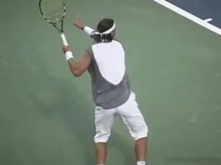
To stay relaxed you have to want to be there under pressure.
Choking
Fear--the word we use is choking--completely short circuits this, whatever talents and whatever skill you have. And that's why athletes are so reluctant to even talk about choking, because it robs you of your talent and skill. And it's an emotional response. All those little receptor sites are picking up the hormones associated with the fear response.
The particular chemical that is apparently the most detrimental is what we call cortisol. And as those cortisol levels escalate in an exaggerated way, feelings of dread, feeling of just uncomfortableness, muscles get tight. It causes a whole host of other messengers to be sent to mobilize the body to flee, to run away. And we can't do that in sport. We've got to fight. We've got to get out there and stay relaxed and calm and loving what we're doing.
That means you've got to think about what's happening to you in a very special way. You cannot be threatened. You've got to think about it in the context of "I want to be here," "I need this situation," "I hate pushers, but I need to play this match," "I need to go out there in the context of competition, and whatever you throw at me, I can handle, and in fact, I love it. Is this great stress or what?"
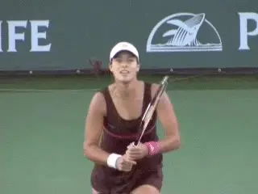
When you body is in balance you can feel an overwhelming sense of optimism.
You perform best when you feel a tremendous sense of energy, when you're mobilized with energy. The life just comes to the surface. You don't feel flat. You don't feel dead. And that reflects a wonderful balance physiologically and biochemically in the body. When you this positive form of energy, it's a very healthy sign. It's a sign the body is in a very good state of balance. There's an overwhelming sense of optimism and positivism.
In almost every case, when an athlete maxes out, it comes in the context of a positive emotional climate. Positive emotions represent a state of balance.
It's true that negative emotions serve a purpose. They're like the instrument gauges on a race car that suggest that the fuel is low. It happens sometimes when you're hungry, you're agitated, you're overstressed, all kinds of things can trigger it.
And that's a very important understanding, that negative emotions serve a very real purpose--they indicate issues that must be addressed. But we have to learn to put aside negative emotion in the context of competition. Then later we can address the needs those negative emotions reflect. Positive emotion simply reflects a healthy, normal state of operation internally. There aren't any great needs that are being expressed.
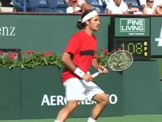
Positive emotion reflects a normal internal state of operation.
Actors and Actresses
In a sense, we have to become wonderful actors and actresses. It's similar to the way the actors and actresses have to summon chemistry on stage to make something that's artificial and phony becomes real, so that they can make it believable on stage.
There's a sense of great fun and enjoyment in the context of competing at your best, because there's a unique chemistry to fun. When you're having fun, you're relaxed, you're focused, everything is like flowing inside you. Fun has its own unique biochemical, physiological basis. There's a sense of effortlessness. It's like your mind and your body are working so wonderfully together, that it's easy, even though you're working so hard, you're pushing yourself to the max.
There's also a sense of spontaneity. You don't have to think it through. You're not forcing the performance. It's like coming from deep within you. You're just very spontaneous when you play.
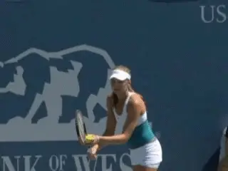
We have to become great actors to summon the emotions that lead to confidence.
This again reflects a special state of neurological balance. There are right and left hemispheres in your brain. The state I am talking about is much more right brain. This is opposed to the left brain approach which is very analytical and very linear, thinking it through in verbal language.
What I am talking about comes much more from a sense of feel, from the creative side of you. And this reflects a sense of trust, a letting go, letting happen what will happen, and just kind of knowing that it's all deep inside you. It's a special kind of arousal.
There's a sense of confidence. Confidence is perhaps the single most powerful emotion that we can talk about, because in the chemistry of confidence brings protection from nerves, brings a wonderful sense of "I can" to any arena and causes you to be aggressive, causes you to take the ball early and not to play it safe and cause you to play to win.
It's like, "I can do this" and that feeling frees you. The muscles remain more relaxed. You're in a situation you feel you can handle. We have to figure out how to get this feeling of confidence to surface, because confidence is a tremendously empowering emotion.
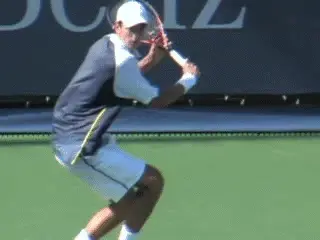
Feelings of anger and defeat are always there, just waiting to grab you.
Negative Emotions Abound
Disempowering emotions are everywhere. The feeling of hopelessness and helplessness and the feeling of low energy and the feeling of "I just can't," the feelings of disgust and of anger and self-defeatism and so forth. Those emotions are just waiting out there to grab you.
The ideal performance state doesn't happen just by jumping out of bed. It's something you've got to work at and understand, You've got to learn how thinking and visualizing and how the way in which we carry our bodies, how we walk, how we move our facial muscles can in a real sense stimulate or block the emotions we need in the context of battle.
When you take a look at the whole constellation of feelings and emotions that are represented in this ideal performance state, you begin to realize it is a very unique emotional response. And this is the response that we're trying to summon when we face adversity and crisis, when there are all kinds of things that are being thrown at us.
Our forehands or backhands suddenly evaporate, we get cheated, we suddenly end up playing far below our potential. We make big mistakes and people in the crowd make comments that infuriate us. Suddenly we have to bring ourselves right back to this very, very special state of emotion, to trigger this very unique emotional response.
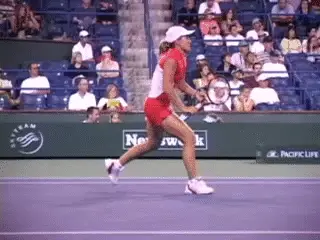
You must be able to summon the right kinds of emotion under adversity.
When things are going badly, when the world turns us against us, this is where the skill is brought to the forefront. We have so much that we put into our practicing and all of the logging of hours and hours. We get into competition and we have expectations.
We want to do well. We want to do the very, very best that we possibly can, and suddenly we find ourselves against all kinds of odds, things are not working. And for us at that point, to be able to continue to summon the kind of emotions which may eventually break us free, that struggle is perhaps the greatest struggle in competitive sport. That is the greatest battle--if we can handle the emotions.
What we're really saying is we're dealing with this remarkable physiology of ours in a wonderfully sensitive way, that we're beginning to understand how feelings and emotions are simply windows to understanding our physiology.
Yes, an outside event can cause us to be angry, we can understand that. But we also can think in ways, we can act in ways which will cause that anger to dissipate, to go away. Or perhaps we can avoid even triggering that feeling of anger in the first place. Perhaps we can keep the emotional balance, the physiological balance that will ultimately give us our dreams in sport, to perform to the very best of whatever we're capable of doing.
 himself who still competes nationally in USTA
events, Jim created the field of Mental
Toughness training with his revolutionary study
of elite pro players. He has been one of the
most influential voices in tennis and tennis
coaching for over 30 years, and is the author of
multiple best selling books. He has expanded his
influence far beyond sports with the creation of
the Human Performance Institute where he and his
staff have worked with hundreds of leaders in
business, law enforcement, and military special
forces. For the last decade he has also directed
an academy for junior players helping young
people learn what winning in life really means.
himself who still competes nationally in USTA
events, Jim created the field of Mental
Toughness training with his revolutionary study
of elite pro players. He has been one of the
most influential voices in tennis and tennis
coaching for over 30 years, and is the author of
multiple best selling books. He has expanded his
influence far beyond sports with the creation of
the Human Performance Institute where he and his
staff have worked with hundreds of leaders in
business, law enforcement, and military special
forces. For the last decade he has also directed
an academy for junior players helping young
people learn what winning in life really means.